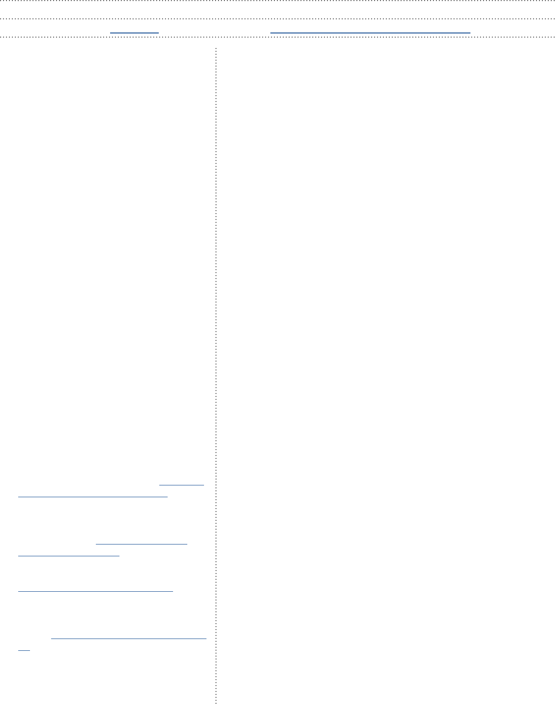

Tom Fisher
Junior Full-stack developer
I am a creative, driven junior full-stack developer
looking to secure my rst tech role. I have
recently completed an intensive full-stack
development boot camp with Northcoders and
have been self teaching web technologies for
roughly a year.
I come from a design / engineering background
and have a track record of nding creative
solutions to complex problems. My previous
roles involved leading design projects from
concept to production, communicating with
stakeholders throughout the process. I have
found that much of what I know about good
design practice also applies to software
development.
I became interested in coding doing open
source hardware projects in my free time, using
microcontrollers and single board computers to
make 3D printers, synthesizers and more. I enjoy
the process of mastering new skills, coding
appeals to me because there is always more
to learn and the creative possibilities are open
ended.
Studying at Northcoders has given me
condence both in my coding ability and in
my decision to change career paths. I am now
excited to begin a new career in tech and feel
condent that my skill set will prove valuable to
the right employer.
Email: Tsher92@gmail.com Phone: 07932728876
GitHub Username: FisherTom
Location: Sheffield
Northcoders (2022-2023) – Trainee full stack developer :
Twelve week full-stack software development boot camp following an
industry led curriculum. The course was focused on relevant web technologies
and ensured best practices were followed throughout including Test Driven
Development, Agile Development, Git ow and pair programming.
Course curriculum:
• Fundamentals - focused purely on gaining a solid foundation in JavaScript
and Test driven development.
• Back-end - I learned about Node, PostreSQL and Express culminating in
a project week where I built a REST API with error handling following the
MVC pattern and using TDD.
• Front-end - I learned how to use React to make frontend web applications
as well as expanding my knowledge of HTML and CSS. The front-end
project involved building a front-end for the API made in the back-end
phase.
• Final Project – As part of a 4 person group I made a full-stack mobile
application using technologies that were not covered on the course
including React Native, Expo, Firebase and MongoDB. The app is
designed to help users to nd and identify species of mushrooms based
on user generated data.
I found the course experience Challenging and rewarding in equal measure. I
have gained experience working with many popular web technologies and now
have the foundation to learn new technologies without direction. I feel that the
course has provided me with the skills I need to move into a professional role.
Project Links:
Front-end :
Game review single page react app: github.com/
FisherTom/game-reviews-react-frontend
React native mobile app called ‘Mushi’ designed
to help people nd and identify mushrooms
based on user data: github.com/FisherTom/
portfolio-mushi-front-end
Back-end: Node REST API for game review site :
github.com/FisherTom/Game-Review-API
REST api made using Node and mongoDB to
handle user generaed data for ‘Mushi’ (see
above) : github.com/FisherTom/portfolio-mushi-
api
Design Futures (2019 – 2022) - Industrial designer / researcher :
(Sheield Hallam University)
• Working as part of a design consultancy on commercial industrial design
projects alongside funded product design research for Sheield Hallam
University.
• I was the Lead designer / researcher on Sheield Innovation Programme
(SIP), providing funded product design consultation for SMEs in the
Sheield region working on a diverse range of clients and projects.
• Several projects involved embedded technology (Raspberry Pi, Arduino
etc.), these projects allowed me to build upon coding knowledge I had
gained from personal projects.
• Undergraduate student mentoring.
Key achievement: Working with Pryor, a historic Sheield tooling
manufacturer founded in 1849, on a project that started as a funded
intervention under SIP, I lead the external design of their latest agship
product, a battery powered power tool. This eventually became a commercial
consultancy project and is now in production.
LinkedIn: linkedin.com/in/thomas-sher-098ab496
Professional Experience